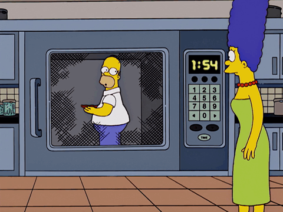

O desenvolvimento histórico das micro-ondas ganhou força na década de 1930, impulsionado pela necessidade de detecção militar. Os físicos britânicos John Randall e Harry Boot desenvolveram o magnetron de cavidade, uma válvula eletrônica capaz de gerar micro-ondas de alta potência. Essa peça foi o coração dos sistemas de radar que deram grande vantagem aos Aliados durante a Segunda Guerra Mundial para detectar aviões e submarinos inimigos no escuro. A transição das micro-ondas para o ambiente doméstico começou por puro acidente em 1945. Ao testar radares industriais no laboratório, percebeu-se que o calor gerado pela onda eletromagnética interagia fortemente com a matéria orgânica. Isso deu origem à patente do forno micro-ondas. O primeiro aparelho comercial, o Radarange (1947), era uma torre imensa de quase 2 metros de altura e pesava mais de 300 kg. O eletrodoméstico só se tornou compacto, seguro e acessível a partir da década de 1970.
O cientista e engenheiro responsável por transformar as micro-ondas em uma tecnologia de aquecimento de alimentos foi o americano Percy LeBaron Spencer (1894–1970).
• Infância e Juventude: Spencer teve uma vida humilde. Ficou órfão na infância, foi criado por tios e teve que abandonar a escola para trabalhar em uma tecelagem aos 12 anos de idade. Apesar de não ter educação formal, era autodidata e devorava livros sobre eletricidade e física.
• Carreira e Marinha: Aos 18 anos, alistou-se na Marinha dos Estados Unidos, onde se especializou em comunicação sem fio e aprendeu cálculo e trigonometria por conta própria. Mais tarde, foi trabalhar na empresa de tecnologia Raytheon, tornando-se uma das mentes mais brilhantes da corporação. Ele detém mais de 300 patentes em sua vida devido ao seu gênio prático em engenharia e metalurgia.
O Momento da Descoberta: Em 1945, enquanto caminhava ao lado de um magnetron ativo nos laboratórios da Raytheon, ele percebeu que a barra de chocolate que estava em seu bolso derreteu completamente. Curioso, Spencer fez testes colocando grãos de milho ao lado do aparelho e observou as primeiras pipocas de micro-ondas da história estourarem no laboratório.
• Ablação por Micro-ondas (MWA): É um tratamento oncológico cirúrgico e minimamente invasivo. Médicos inserem uma agulha-antena diretamente no centro de tumores sólidos (como no rim, fígado ou pulmão). A ponta emite micro-ondas que cozinham e destroem as células cancerosas através de calor extremo localizado, sem danificar o tecido saudável ao redor.
• Diatermia e Termoterapia: Equipamentos clínicos utilizam micro-ondas em potências controladas para aquecer tecidos musculares profundos na fisioterapia. Esse processo estimula a circulação sanguínea, alivia dores crônicas nas articulações e acelera a regeneração de tecidos lesionados.
• Uso Laboratorial e Farmacêutico: Câmaras de micro-ondas esterilizam equipamentos médicos rapidamente e servem de catalisadores em reações químicas complexas para acelerar a síntese de novos fármacos e vacinas.
As micro-ondas são uma forma de radiação eletromagnética classificada como radiação não ionizante, o que significa que não altera a estrutura atômica do corpo humano nem danifica o DNA.
• Faixa de Frequência: Compreendida entre 300 MHz (3 × 10⁸ Hz) e 300 GHz (3 × 10¹¹ Hz).
• Comprimento de Onda: Varia inversamente à frequência, cobrindo o intervalo de 1 metro (em 300 MHz) até 1 milímetro (em 300 GHz).
• Comportamento Físico: Propagam-se estritamente em linha reta. Elas atravessam a atmosfera terrestre com facilidade sob condições climáticas adversas (como nuvens e chuva). Interagem fortemente com moléculas polares (como a água), provocando o chamado aquecimento dielétrico.
Samyra Ferreira
Giulia Silveira
Letícia Souza